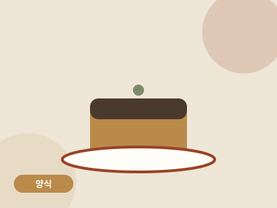

양식 · 디저트 · 50분 · 난이도 중
미니오븐 바스크 치즈케이크
3만 원짜리 미니 오븐으로 카페 디저트를. 반죽은 볼 하나, 거품기 하나.

- 조리 시간
- 50분
- 난이도
- 중
- 분량
- 미니 케이크 1개(2~3인분)
- 필요 화구
- 미니 오븐(최대 230℃)
만드는 법
- 크림치즈 풀기실온에 30분 둔 크림치즈를 볼에 넣고 거품기로 부드럽게 풉니다. 전자레인지 15초로 실온 과정을 단축할 수 있습니다.
- 재료 순서대로설탕 → 계란(하나씩) → 생크림 → 밀가루 순으로 넣으며 그때그때 섞습니다. 순서만 지키면 실패하지 않습니다.
- 유산지 세팅틀에 유산지를 구겨 넣고 반죽을 붓습니다. 바스크 치즈케이크는 주름진 유산지가 오히려 정석입니다.
- 220℃에서 35분미니 오븐 220℃에서 30~35분. 윗면이 거의 탄 것처럼 진한 갈색이 되어야 맞습니다. 미니 오븐은 위 열선이 가까우니 25분쯤부터 색을 확인하세요.
- 식히는 게 조리의 절반실온에서 1시간, 냉장고에서 반나절 식힙니다. 갓 구운 직후는 푸딩처럼 흐르지만 식으면 단단해집니다.
원룸쿡의 한 끗
미니 오븐은 내부가 좁아 윗면이 빨리 탑니다. 25분 시점에 이미 검게 보여도 정상이니 당황하지 마세요. '탄 게 아니라 바스크'입니다.
미니 오븐은 내부가 좁아 윗면이 빨리 탑니다. 25분 시점에 이미 검게 보여도 정상이니 당황하지 마세요. '탄 게 아니라 바스크'입니다.